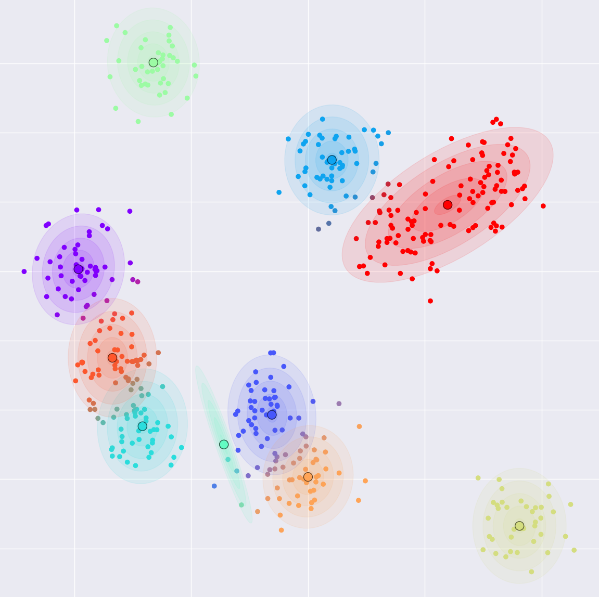
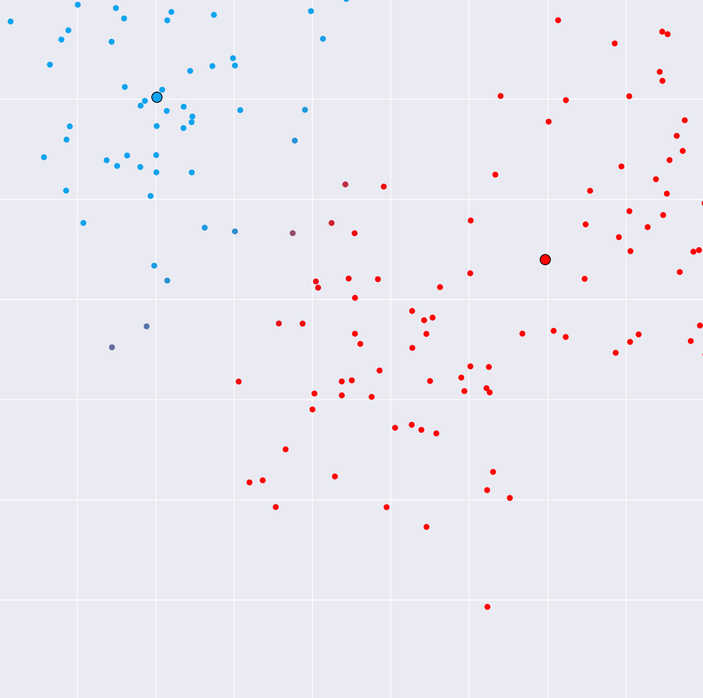
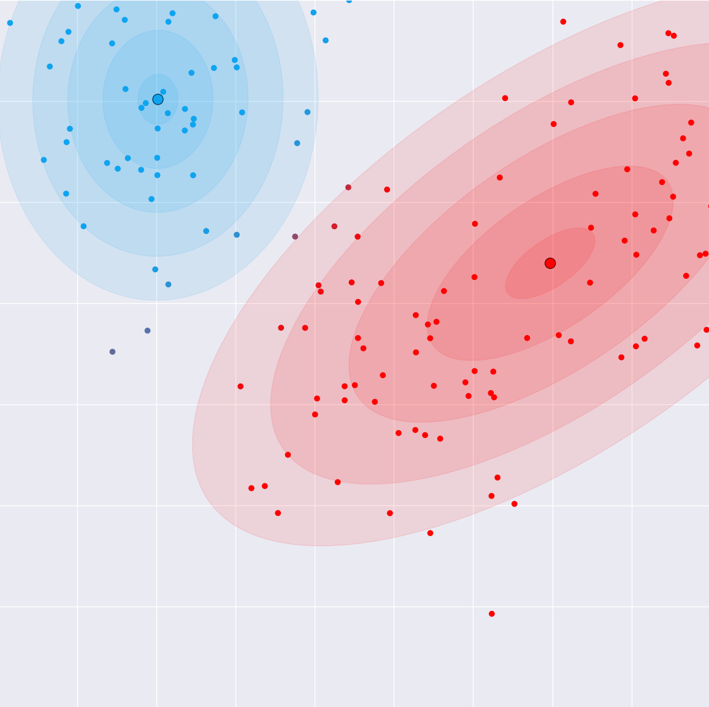
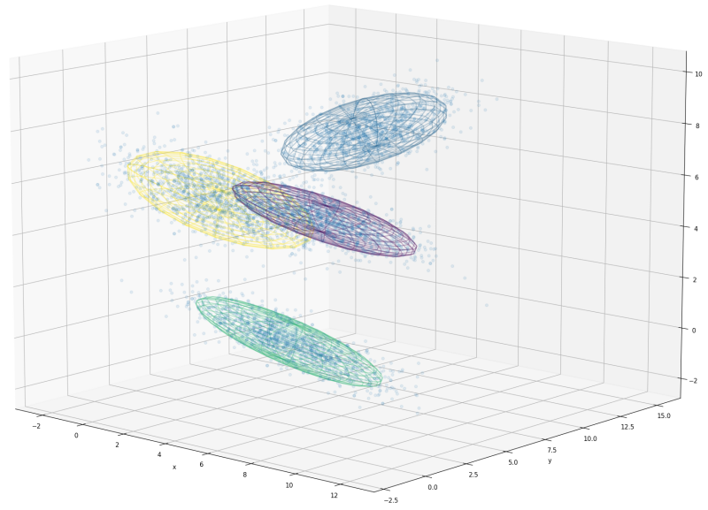
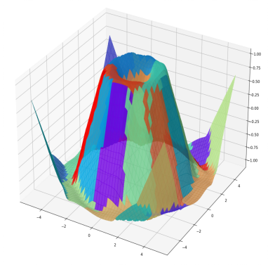

Performant, scientific computation in Python and Rust
PyConDE & PyData Berlin 2024
The Rust and the Python
Performant, scientific computation in Python and Rust
Who am I?
- Data Scientist at BlueYonder
- Research interests: Roboticist & Cognitive Cognition, Machine Learning (self-organization)
- Pythonista (> 15 years) and Rustacean (~2.5 years)
What to expect?
-
A time-lapse of algorithm development from the formula
to the optimized package in Python and Rust - Takeaways
- Confidence in creating scientific / numeric / ML packages
- Strength and weakness of Python and Rust
- How well they actually play together
- (Opinionated) Best practices and packaging
- All sources (including these slides) on Github
- Open source license (MIT). Feel free to use as a template!
What to not expect?
- A comprehensive Rust course
- Deep learning frameworks
- Complex models such as LLM
- No bugs
- No typos
Structure
- Gaussian Mixtures and Expectation Maximization
- Python tooling, implementation and packaging
- Rust: Brief overview, Python extension and benchmarking
Part 1 — Gaussian Mixtures and Expectation Maximization
Why this model?
- Easy to understand
- Educational yet useful / versatile
- Easy / fast to implement (±50 LoC)
- Easy / fast to train and evaluate
- Bonus: Probabilistic
… and why not?
- Easy to express with arrays (numpy, torch)
- Difference to Rust not drastic
- Better suited: Caching (e.g., dynamic programming), complex control flows, …
Formal definition

$$ \begin{aligned}
p(\bm x | M ) &= \sum_{m\in M} \pi_m \cdot p(\bm x | m) \\
&= \sum_{m\in M} \pi_m \cdot \mathcal N(x; \bm \mu_m, \Sigma_m) \\
\mathcal N(x; \bm \mu_m, \Sigma_m) &:= \frac{1}{ \sqrt{(2\pi)^d \det({\Sigma_m})} } \\ &
\qquad
\exp \left(-\frac{1}{2}({\mathbf x}-{\bm\mu_m})^{\top}{{\Sigma_m}}^{-1}({\bm
x}-{\bm\mu_m}) \right)
\end{aligned} $$
"A distribution over points where each point is drawn from one of multiple
Normal distributions (Gaussians)"
$$ X = \left\{ \begin{pmatrix} \bm x_i \\ z_i \end{pmatrix}\right\}_i,
\quad \bm x_i \in \mathbb R^d, z_i \in M $$
- Data $\bm x_i$ is observable; $z_i$ non-observable / latent
- 1 Multinomial/Categorical distribution
- $k$ Normal distributions
- Each draw $i$ first determines the Normal distribution $z_i$ and then the sample $\bm x_i$
- Example: Weight / height distribution in an animal population
- see my blog post (no formulas)
Expectation Maximization (EM)
Gaussian mixture models can be trained with EM
$$ X = \left\{ \bm x_i\right\}_i, \quad \bm x \in \mathbb R^d $$
- Algorithm for unsupervised learning / Clustering
- Missing data: We don't know which Gaussian $z_i$ produced $\bm x_i$
- The unobservable variable $z_1$ is called the latent state
- Alternating pattern: E-Step and M-Step
- Guaranteed to converge but prone to local minima
- Many models can be trained with EM:
- $k$-Means
- Self-organizing neural networks
- Other mixture models
- Hidden Markov Models
- Kalmann filters

E(xpectation)-step (Intuition)

- "Guessing the hidden states"
- For each sample and each component, the probability that the sample has been generated by the component
- Unlike $k$-means, points can belong to multiple clusters "soft assignment"
- Number of data points $\times$ number of clusters probabilities ("responsibility matrix")
E(xpectation)-step (Formula)
$$
\begin{aligned}
\forall m \in M, \bm x \in X&: \\
\bar \gamma_{\bm x,m} &= \pi_m \cdot p(\bm x | m) \\
&= \pi_m \cdot \mathcal N( \bm x; \bm\mu_m, \Sigma_m) \\
\gamma_{\bm x,m} &= \frac{\bar \gamma_{\bm x, m}}{ \sum_{m \in M} \bar \gamma_{\bm x, m} }
\qquad
\text{(Bayes)} \\ \\
\mathcal N( \bm x; \bm\mu_m, \Sigma_m) &:= \frac{1}{ \sqrt{(2\pi)^d \det({\Sigma_m})} }
\exp \left(-\frac{1}{2}({\mathbf x}-{\bm\mu_m})^{\top}{{\Sigma_m}}^{\color{red}{-1}}({\bm
x}-{\bm\mu_m})
\right)\\
\end{aligned}
$$
M(aximization)-step (Intuition)

- Maximize the likelihood of the distribution with the guessed latent state (from the E-Step)
- Compute the new parameters of each Gaussian
- Sample mean and covariance weighted by the responsibilities (from the E-Step)
- We will implement this function in Rust
M(aximization)-step (Formula)
$$ \begin{aligned}
\bm\mu_m &\leftarrow \frac{\sum_{\bm x \in X} \gamma_{\bm x,m} \cdot \bm x }{\sum_{\bm x \in
X}
\gamma_{\bm x,m}}
\\
\Sigma_m &\leftarrow \frac{\sum_{\bm x \in X} \gamma_{\bm x,m} \cdot (\bm x -
\bm\mu_m)^t\cdot
(\bm x - \bm \mu_m) }{\sum_{\bm x \in X} \gamma_{\bm x,m}}\\
\pi_m &\leftarrow \frac{\sum_{\bm x \in X}}{\sum_{\bm x \in X} \gamma_{\bm x,m}}
\end{aligned}
, \quad
$$
Applications

High-dimensional clustering (Warning: $\mathcal O(n^3)$!)

- Regression
- Image recognition
- …
Part 2 — Python tooling,
implementation and packaging
Setup
$ # Python packaging and dependency management
$ curl -LsSf https://astral.sh/uv/install.sh | sh
$ # Get the code
$ git clone https://github.com/StefanUlbrich/PyCon2024.git
$ cd PyCon2024 && git checkout skeleton
PyCon2024$ # Create virtual environment and install dependencies
PyCon2024$ uv env
PyCon2024$ uv pip sync requirements.txt
PyCon2024$ . ./venv/bin/activate
- System setup (Python install, IDE setup, etc.) out of scope
- All steps of the tutorial as git tags (e.g., skeleton and rust-skeleton)
- Tested on MacOS and Linux only (WSL should work)
- I use VSCode and Jupyter lab for development and prototyping
GMM/EM in Python:
Design decisions
- ADT / Data class represents the GMM
- Numpy arrays for parameters
- Additional dimensions instead of lists
- No OOP
- No OOP (easier to replace functions)
- EM implemented as three functions
- E-Step
- M-Step variants: 2 Python + 1 Rust
- Simple initialization:
(random $\gamma_{\bm x,m}$ + M-Step) - Benchmark (timeit) and data generation
@dataclass
class GMM:
means: NDArray[np.float64] # k x d
covs: NDArray[np.float64] # k x d x d
weights: NDArray[np.float64] # k
def expect(
gmm: GaussianMixtureModel,
data: NDArray[np.float64] # n x d
) -> NDArray[np.float64]: # n x k
...
def maximize(
gmm: GaussianMixtureModel,
responsibilities: NDArray[np.float64], # n x k
data: NDArray[np.float64] # n x d
) -> None:
...
The E-Step
$$ \begin{aligned} \forall m \in M, \bm x \in X&: \\ \bar \gamma_{\bm x,m} &= \pi_m \cdot p(\bm x | m) \\ &= \pi_m \cdot \mathcal N( \bm x; \bm\mu_m, \Sigma_m) \\ \gamma_{\bm x,m} &= \frac{\bar \gamma_{\bm x, m}}{ \sum_{m \in M} \bar \gamma_{\bm x, m} }\\ \mathcal N( \bm x; \bm\mu_m, \Sigma_m) &:= \pi_m \cdot \frac{1}{ \sqrt{(2\pi)^d \det({\Sigma_m})} } \exp \left(-\frac{1}{2}({\mathbf x}-{\bm\mu_m})^{\top}{{\Sigma_m}}^{-1}({\bm x}-{\bm\mu_m}) \right)\\ \end{aligned} $$Intimidating, but …
- Only $n\times k$ Gaussians
- And normalization (Bayes theorem)
- How hard can it be …? (live)
The M-Step — Naïve
$$ \begin{aligned}
\bm\mu_m &\leftarrow \frac{\sum_{\bm x \in X} \gamma_{\bm x,m} \cdot \bm x }{\sum_{\bm x \in X}
\gamma_{\bm x,m}} \\
\Sigma_m &\leftarrow \frac{\sum_{\bm x \in X} \gamma_{\bm x,m} \cdot (\bm x - \bm\mu_m)^t\cdot
(\bm x - \bm \mu_m) }{\sum_{\bm x \in X} \gamma_{\bm x,m}} \\
\pi_m &\leftarrow \frac{\sum_{\bm x \in X}}{\sum_{\bm x \in X} \gamma_{\bm x,m}}
\end{aligned}
$$
- We will focus on the M-Step
- Loops in python are slow. How can we avoid as many loops as possible
- First naïve implementation (only one loop)
Look mom, no loops
$$ \Sigma_m \leftarrow \frac{\sum_{\bm x \in X} \gamma_{\bm x,m} \cdot (\bm x -
\bm\mu_m)^t\cdot (\bm x - \bm \mu_m) }
{\sum_{\bm x \in X} \gamma_{\bm x,m}}, \qquad \forall m \in M
$$
$$ \Sigma_m \leftarrow \frac{\sum_{\bm x \in X} \gamma_{\bm x,m} \cdot \bar{\bm x}_m^t\cdot
\bar{\bm x}_m }
{\sum_{\bm x \in X} \gamma_{\bm x,m}}, \qquad \bar{\bm x}_m = \bm x - \bm \mu_m, \quad
\forall m \in M
$$
$$ \bar X_{k,n,d} \cdot \Gamma_{k,n} \cdot \bar X_{k,n,d} = \bm \Sigma_{k,d,d} $$
knd, kn, knd -> kdd
einstein_sum_notation('knd, kn, knd -> kdd', data, responsibilities, data)
einsum('knd, kn, knd -> kdd', data, responsibilities, data)
np.einsum('knd, kn, knd -> kdd', data, responsibilities, data)
- Think in arrays to avoid loops!
- This is called Einstein notation
- Included in Numpy!
- Must be faster, right? Let's find out!
Benchmark
data, _ = gmm.make_blobs(n_samples=10000, centers=20, n_features=2, random_state=7)
model = gmm.initialize(data, 20)
print(",",model.means)
r = gmm.expect(model, data)
Pure Python with
einsum
13 ms ± 369 µs per loop (mean ± std. dev. of 7 runs, 100 loops each)
Pure Python with loops
7.37 ms ± 194 µs per loop (mean ± std. dev. of 7 runs, 100 loops each)
- Python loops perform better!
- Surprisingly, the loop version is faster
Part 3 — Rust: Brief overview,
Python extension and benchmarking

Rust: A quick introduction
Rust is on its seventh year as the most loved language with 87% of developers saying they want to continue using it. Rust also ties with Python as the most wanted technology with TypeScript running a close second. (stackoverflow survey 2022)
- Developed by Graydon Hoare at Mozilla since 2010; first stable version 2015
- Feels modern, avoids pitfalls and is peformant ("zer cost")
- but … it takes time to learn. C++ background definitively helpful
- A very active, committed community
- Common headline on hacker news: " * .. but written in Rust"
- Overlap with Python: ruff, polars, uv, rye, pixi, …
- Learning impacted my style of Python programming
Structs and traits
pub struct NewsArticle {
pub headline: String,
pub location: String,
pub author: String,
pub content: String,
}
pub trait Summary {
fn summarize(&self) -> String;
}
impl Summary for NewsArticle {
fn summarize(&self) -> String {
format!("{}, by {} ({})", self.headline, self.author, self.location)
}
}
- No inheritance. No multiple inheritance. Use composition instead
- Traits (interfaces) similar to Protocols in Python
Borrowing & Lifetimes
let mut s = String::from("hello");
{
let r1 = &mut s;
} // r1 goes out of scope here, so we can make a new reference with no problems.
let r2 = &mut s;
- Rust is memory safe (like Python, unlike C/C++)
- No garbage collection like Python / Java
- No reference counting like C++
- The Borrowing checker enforces rules that prevent memory errors
Enums
enum Message {
Quit,
Move { x: i32, y: i32 },
Write(String),
ChangeColor(i32, i32, i32),
}
- Algebraic data types
- The foundation for elegant error handling and optional types
- A bit like Union[T, …]
… and much more
- Powerful pattern matching
- Functional programming
- Excellent tooling
- …
Porting the M-Step to Rust
$ # Installation
$ curl --proto '=https' --tlsv1.2 -sSf https://sh.rustup.rs | sh
$ rustup update # Optional: Update the tool chain
$ cd PyCon2024 && git checkout rust-examples
PyCon2024$ # git checkout rust_test # or rust_skeleton
- Install instructions
- Tested on MacOS and Linux only (WSL should work)
Loading numpy data
fn main() {
let data: Array2 = read_npy("data/data.npy").unwrap();
println!("{}", data);
let responsibilities: Array2 = read_npy("data/responsibilities.npy").unwrap();
println!("{}", responsibilities);
let means: Array2 = read_npy("data/means.npy").unwrap();
println!("{}", means);
}
Array passing
use ndarray::prelude::*;
pub fn foo(data: Array2) -> Array2 { Array2::::zeros((0,0)) }
use ndarray::prelude::*;
pub fn foo(data: &Array2) -> Array2 { Array2::::zeros((0,0)) }
use ndarray::prelude::*;
pub fn foo(mut data: &Array2, other: ArrayView2:: ) {
temp.assign(&data);
}
- Ownership to arrays can be passed to a function
- Arrays can be passed as a mutable or immutable reference
- A view to an array can be generated that holds a reference
- A function can be written in a generic way to accept all
- Remember, in Python you don't even need the type
Array handling
Creating sums
let sum_responsibilities = responsibilities.sum_axis(Axis(0));
sum_responsibilities = responsibilities.sum(axis=1)
Broadcasting
let x = (&responsibilities.slice(s![.., .., NewAxis]) * &data.slice(s![.., NewAxis, ..]))
x = np.sum(data[np.newaxis, :, :] * responsibilities[:, :, np.newaxis], axis=1)
Dot product
let cov = &x.t().dot(&y)
covs = x.T @ y
-
ndarrayhas an interface that reminds ofnumpy - See the ndarray for numpy users guide
- No
einsumin Rust
The M-Step
- The C-way
- Iterators
- Parallelization
- Benchmarking with
criterion.rs
Creating the extension
PyCon2024$ git checkout bindings
PyCon2024$ # git checkout benchmarks # spoiler alert!
PyCon2024$ maturin develop -r --strip # Builds the extensions and adds it to the venv
PyCon2024$ maturin build -r --strip # Creates a binary wheel
Benchmark
data, _ = gmm.make_blobs(n_samples=10000, centers=20, n_features=2, random_state=7)
model = gmm.initialize(data, 20)
print(",",model.means)
r = gmm.expect(model, data)
Pure Python with
einsum
13 ms ± 369 µs per loop (mean ± std. dev. of 7 runs, 100 loops each)
Pure Python with loops
7.37 ms ± 194 µs per loop (mean ± std. dev. of 7 runs, 100 loops each)
Parallel Rust
3.49 ms ± 23.2 µs per loop (mean ± std. dev. of 7 runs, 100 loops each)
- MacBook, 2.6 GHz 6-Core Intel Core i7
- Rust wins due to parallelization
- More analysis desired
Key takeaways
- Be confident in implementing scientific code!
- It's fun creating mixed Rust/Python packages!
- But it does not always make a lot of sense to do so
- Never ask an AI to generate a picture with a crab together with a python